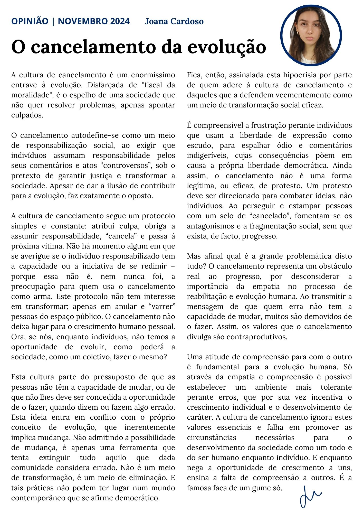

O cancelamento da evolução
Por Joana Araújo Cardoso
A cultura de cancelamento é um enormíssimo entrave à evolução. Disfarçada de "fiscal da moralidade", é o espelho de uma sociedade que não quer resolver problemas, apenas apontar culpados.
O cancelamento autodefine-se como um meio de responsabilização social, ao exigir que indivíduos assumam responsabilidade pelos seus comentários e atos “controversos”, sob o pretexto de garantir justiça e transformar a sociedade. Apesar de dar a ilusão de contribuir para a evolução, faz exatamente o oposto.
A cultura de cancelamento segue um protocolo simples e constante: atribui culpa, obriga a assumir responsabilidade, “cancela” e passa à próxima vítima. Não há momento algum em que se averigue se o indivíduo responsabilizado tem a capacidade ou a iniciativa de se redimir – porque essa não é, nem nunca foi, a preocupação para quem usa o cancelamento como arma. Este protocolo não tem interesse em transformar; apenas em anular e “varrer” pessoas do espaço público. O cancelamento não deixa lugar para o crescimento humano pessoal. Ora, se nós, enquanto indivíduos, não temos a oportunidade de evoluir, como poderá a sociedade, como um coletivo, fazer o mesmo?
Esta cultura parte do pressuposto de que as pessoas não têm a capacidade de mudar, ou de que não lhes deve ser concedida a oportunidade de o fazer, quando dizem ou fazem algo errado. Esta ideia entra em conflito com o próprio conceito de evolução, que inerentemente implica mudança.
Não admitindo a possibilidade de mudança, é apenas uma ferramenta que tenta extinguir tudo aquilo que dada comunidade considera errado. Não é um meio de transformação, é um meio de eliminação. E tais práticas não podem ter lugar num mundo contemporâneo que se afirme democrático. Fica, então, assinalada esta hipocrisia por parte de quem adere à cultura de cancelamento e daqueles que a defendem veementemente como um meio de transformação social eficaz.
É compreensível a frustração perante indivíduos que usam a liberdade de expressão como escudo, para espalhar ódio e comentários indigeríveis, cujas consequências põem em causa a própria liberdade democrática. Ainda assim, o cancelamento não é uma forma legítima, ou eficaz, de protesto. Um protesto deve ser direcionado para combater ideias, não indivíduos. Ao perseguir e estampar pessoas com um selo de “cancelado”, fomentam-se os antagonismos e a fragmentação social, sem que exista, de facto, progresso.
Mas afinal qual é a grande problemática disto tudo? O cancelamento representa um obstáculo real ao progresso, por desconsiderar a importância da empatia no processo de reabilitação e evolução humana. Ao transmitir a mensagem de que quem erra não tem a capacidade de mudar, muitos são demovidos de o fazer. Assim, os valores que o cancelamento divulga são contraprodutivos.
Uma atitude de compreensão para com o outro é fundamental para a evolução humana. Só através da empatia e compreensão é possível estabelecer um ambiente mais tolerante perante erros, que por sua vez incentiva o crescimento individual e o desenvolvimento de caráter. A cultura de cancelamento ignora estes valores essenciais e falha em promover as circunstâncias necessárias para o desenvolvimento da sociedade como um todo e do ser humano enquanto indivíduo. E enquanto nega a oportunidade de crescimento a uns, ensina a falta de compreensão a outros. É a famosa faca de um gume só.
